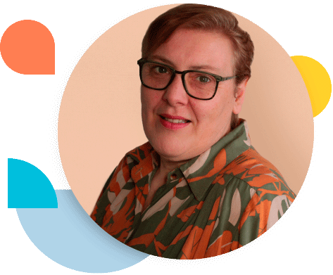

Hola, mi nombre es
Marcela Martin
Me desarrollo como Psicóloga Social desde el año 2009 y desde entonces siempre trabajé como docente de Psicología Social en la escuela donde me formé y luego en un proyecto propio en compañía de otros colegas tanto en escuelas presenciales como virtuales.